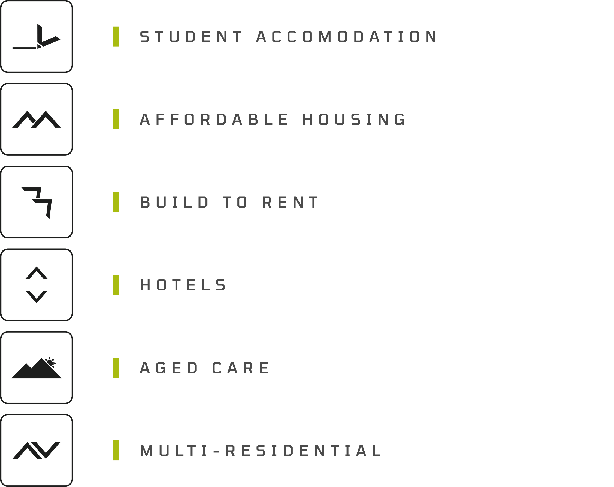

The home that arrives. Now with the hands that deliver it.
HAAVN×Hamilton Marino
AUSTRALIA’S FIRST END-TO-END SOLUTION IN MODULAR SUPPLY, FINANCE, AND CONSTRUCTION.
// MANAGEMENT
With decades of hands-on experience, Haavn knows what it takes to make projects work right from feasibility through to practical completion.
Traditional build or modular, we manage the process from end to end with the discipline and certainty that comes from having done it well for a long time.
// INTELLIGENCE
Underpinning the modular intelligence that we bring to all projects is our ability to deliver the final outcome.
Through precision manufacturing our supply offering guarantees levels of quality, economies of scale and certainty in delivery that can’t be matched through traditional construction techniques.
// PRECISION
Given our depth of knowledge in property development and what makes a feasibility work, by natural evolution we have established the modular construction intelligence that will see our industry through to a new era.
We use this intelligence to advise our clients on how a modular solution can deliver high-quality outcomes, condensed programmes and cost certainty for their projects.
WHAT WE SUPPLY:

Client decks.
Every HAAVN supply presentation, live and presentable from here. Arrow keys or space to advance, G for the overview, F for fullscreen, ⌘P to export the deck as a PDF.
presentation.html — copy an existing one in the PROJECTS block and change the details. A finished PDF (a document that is already designed) goes in as page images instead: render it to assets/<name>/p-01.jpg and describe the sections with pageSlides(). Then add the row to DECKS at the top of this page.
How modular works.
Film, imagery and 3D assets the team can put in front of a client — the factory, the set, the finished product. Everything plays here; nothing needs downloading first.
public/haavn-supply/content/ and add one row to the MEDIA block at the top of this page — group, kind (video, image or file), title, one line of description, the filename and its size. A video wants a poster frame beside it: same name, .jpg. On a Mac, qlmanage -t -s 1600 -o . yourfile.mp4 pulls one straight out of the video.
The library.
Brand, technical and commercial documents for HAAVN — the reference set for the team and for the developers, builders and consultants we supply.
public/haavn-supply/documents/ and add one row to the DOCS block at the top of this page — category, title, one line of description, the filename and its size. It appears on the shelf the moment the site redeploys.